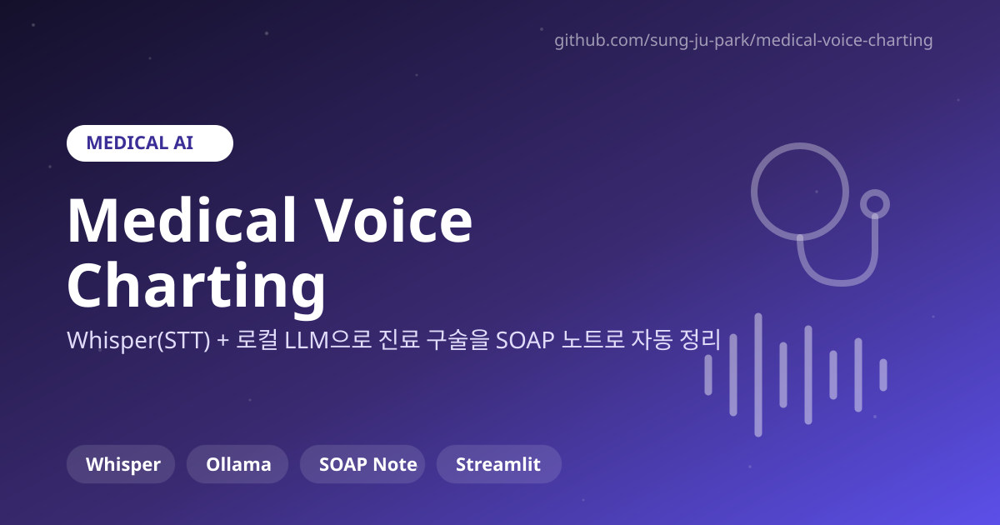

Whisper(STT) + 로컬 LLM으로 진료 구술을 SOAP 노트로 자동 정리하는 프로토타입
| 인원 | 개인 |
| 역할 | Whisper 기반 음성 전사 구현, 로컬 LLM으로 SOAP 형식 구조화 전체 |
| 주요 기술 | Whisper, Ollama, Python |
| GitHub | sung-ju-park/medical-voice-charting |
진료 중 구술한 내용을 의료진이 매번 직접 타이핑해 정리해야 하는 번거로움에서 출발했습니다. 음성을 실시간으로 텍스트로 바꾸고, 그 텍스트를 의료 현장에서 쓰는 SOAP(Subjective/Objective/Assessment/Plan) 형식으로 자동 정리해주는 프로토타입을 만드는 것이 목표였습니다.
개발 과정에서 Whisper가 "인후통" 같은 의료 전문 용어를 다른 단어로 잘못 전사하는 경우를 직접 확인했습니다. 일반 대화용으로 학습된 음성인식 모델이 의료 도메인 특화 용어에서는 정확도가 떨어질 수 있다는 걸 실제 사례로 마주한 것입니다.
이 경험을 통해 AI 모델의 결과를 그대로 사용하는 것이 아니라, 실제 업무 환경에서 발생할 수 있는 오류를 고려한 검증과 후처리가 필요하다는 결론을 얻었습니다. 모델 출력을 최종 결과로 바로 쓰지 않고, 의료 용어 오인식 가능성을 열어둔 채로 다음 단계(SOAP 구조화)를 설계하는 방향으로 접근했습니다.
음성 입력부터 SOAP 형식 노트 출력까지 이어지는 프로토타입을 완성했습니다. 무엇보다 이 과정에서 얻은 "AI 출력을 무조건 신뢰하지 않고 실제 환경의 오류 가능성을 함께 설계에 반영한다"는 관점은, 이후 SmartDoc AI의 자가교정 구조를 설계할 때도 그대로 이어졌습니다.
